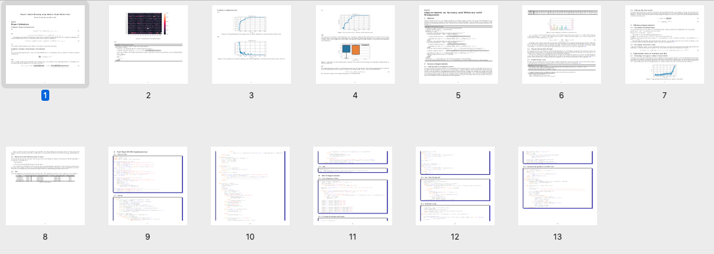

<div id="ajax-page" class="ajax-page-content">
    <div class="ajax-page-wrapper">
        <div class="ajax-page-nav">
            <!--<div class="nav-item ajax-page-prev-next">-->
                <!--<a class="ajax-page-load" href="portfolio-1.html"><i class="zmdi zmdi-chevron-left"></i></a>-->
                <!--<a class="ajax-page-load" href="portfolio-3.html"><i class="zmdi zmdi-chevron-right"></i></a>-->
            <!--</div>-->
            <div class="nav-item ajax-page-close-button">
                <a id="ajax-page-close-button" href="#"><i class="zmdi zmdi-close"></i></a>
            </div>
        </div>

        <div class="ajax-page-title">
            <h1>Cipher Breaking using Markov Chain Monte Carlo</h1>
        </div>

        <div class="row">
            <div class="col-sm-7 col-md-7 portfolio-block">
                <div class="owl-carousel portfolio-page-carousel">
                    <div class="item">
                        
                    </div>
                </div>

                <!--
                <div class="portfolio-page-image">
                    
                </div>
                -->

                <script type="text/javascript">
                    jQuery(document).ready(function($){

                        $('.portfolio-page-carousel').owlCarousel({
                            smartSpeed:1200,
                            items: 1,
                            loop: true,
                            dots: true,
                            nav: true,
                            navText: false,
                            margin: 10
                        });

                    });
                </script>
            </div>

            <div class="col-sm-5 col-md-5 portfolio-block">
                <!-- Project Description -->
                <div class="block-title">
                    <h3>Description</h3>
                </div>
                <ul class="project-general-info">
                    <li><p><i class="fa fa-user"></i>Shiyin Wang</p></li>
                    <li><p><i class="fa fa-globe"></i> <a href="https://github.com/shiyinw/cipher_breaking_mcmc" target="_blank">https://github.com/shiyinw/cipher_breaking_mcmc</a></p></li>
                    <li><p><i class="fa fa-calendar"></i> 2019 Apr ~ 2019 May</p></li>
                </ul>

                <p class="text-justify">A substitution cipher is a method of encryption by which units of plaintext are encrypted according to a ciphering function.</p>
                <!-- /Project Description -->

                <!-- Technology -->
                <div class="tags-block">
                    <!--<div class="block-title">-->
                        <!--<h3>Technology</h3>-->
                    <!--</div>-->
                    <ul class="tags">
                        <li><a>MCMC</a></li>
                        <li><a>Python</a></li>
                        <li><a>Cipher Breaking</a></li>
                        <li><a>Inference</a></li>
                    </ul>
                </div>
                <!-- /Technology -->

                <!-- Share Buttons -->
                <div class="btn-group share-buttons">
                    <div class="block-title">
                        <h3>Share</h3>
                    </div>
                    <a href="https://www.facebook.com/sharer/sharer.php?u=https://shiyinw.github.io/" target="_blank" class="btn"><i class="fa fa-facebook"></i> </a>
                    <a href="http://www.twitter.com/share?url=https://shiyinw.github.io/" target="_blank" class="btn"><i class="fa fa-twitter"></i> </a>
                </div>
                <!-- /Share Buttons -->
            </div>
        </div>
    </div>
</div>
